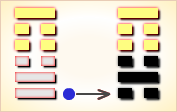
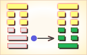
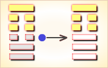
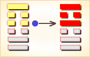
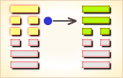
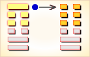

周易第41卦_损卦(山泽损)_艮上兑下
如有疑问互相交流，微信：470283584
周易第41卦详解
损卦原文
损。有孚，元吉，无咎，可贞。利有攸往。曷之用？二簋可用享。
象曰：山下有泽，损。君子以征忿窒欲。
白话文解释
损卦：筮遇此卦，将有所俘获，大吉大利，没有灾难，是称心的卜问。而且所往将获利。将有人送来两盆食物，可享口福。
《象辞》说：本卦上卦为艮，艮为山；下卦为兑，兑为泽，可见山下有泽是损卦的卦象。君子观此卦象，以泽水浸蚀山脚为戒，从而制止其忿怒，杜塞其贪欲。
《断易天机》解
损卦艮上兑下，为艮宫三世卦。损象征损益、减少，为损己之兆，多主不吉，但只要坚守诚信，就会有利。
北宋易学家邵雍解
损下益上，损盈益虚；先难后易，量入为出。
得此卦者，损己利人，虽然开始会有所不顺，但付出总会有所回报，因祸得福之象。
台湾国学大儒傅佩荣解
时运：心平气和，才有发展。
财运：和气生财，损己利人。
家宅：地势宜平；夫妇得正。
身体：修身养性。
传统解卦
这个卦是异卦（下兑上艮）相叠。艮为山；兑为泽。上山下泽，大泽浸蚀山根。损益相间，损中有益，益中有损。二者之间，不可不慎重对待。损下益上，治理国家，过度会损伤国基。应损则损，但必量力、适度。少损而益最佳。
大象：山高水深，各得其所，因损得益之象。
运势：现况诸事不顺，有破财之象，虽先损失，但后反而得益，因祸得福。
事业：开拓事业要有所投入，投入多少应事先精心算计，力求损益得当。诸事皆应有节度，切忌欺诈、贪婪。天下事克己最难，务必严格要求自己，刻苦奋斗，手段灵活，争取事业成功。
经商：全面调查市场行情，计算投入和收益的比例。不必过于计较利润的多少，获利即可。真诚与他人合作，彼此信任，手段灵活，切勿自我封闭。
求名：为了成长进步，务必有所投入，且应付诸实践。以损增益，成就理想。
婚恋：全面权衡对方的长处与短处，应从大处着眼。
决策：为人聪颖，善于权衡利弊。顺应自然发展规律，积极主动与他人合作，助人为乐，适度投入，资助他人，而自己要宁俭勿奢。如此，诸事都可以十分顺利。
台湾张铭仁解卦
损：表示小有损失也，主凶中带吉之象。「赛翁失马、焉之非福」是此卦最好的解释。投资、事业、借贷、感情皆是失意不顺之时，然对事要有信心，学得经验将可得到更好的结果。若将要投资则不可。
解释：有所损害、损失。
特性：心地善良，富同情心，悲天悯人，体贴他人，善于照顾，安慰别人。牺牲小我，完成大我精神，生活节俭，大方助人。
运势：诸事不如意，若倾于利欲不当之心则有灾，散财之损。必须能够悟其所损，方能挽回局势。与人共事商量则可收损失之象。
家运：正处于受损之时，审慎挽救颓势也。
疾病：现况病情虽重，积极治疗可愈。身体较衰弱，注意肠胃、咽喉、贫血等疾。
胎孕：产母有凶象。
子女：儿女多诚实孝顺，幸福之格。
周转：可达目的。
买卖：虽有损，但终得利。
等人：可能会迟到。
寻人：在东北或西方友人家中，可寻。否则会自回。
失物：不能寻回。
外出：有益可行。注意节省费用，防止损多于益。
考试：多努力，榜上可题名。
诉讼：有斗争之象，损失破财，和解反而获益。
求事：可慢慢受重用。
改行：可行，勿急躁，宜周密行事。
开业：吉利，宜有耐力。
周易第41卦初九爻详解
初九爻辞
初九。已事遄往，无咎，酌损之。
象曰：已事遄往，尚合志也。
白话文解释
初九：祭祀大事，得赶快去参加，这才不会有灾难。祭品过丰，可以酌情减损。
《象辞》说：“祭祀大事，得赶快去参加”，这是体现了敬畏鬼神的心意。
北宋易学家邵雍解
平：得此爻者，谋事得当，可获利，不良者，或因酒食误事。做官的会因为工作忙碌而顾不得家庭，声望日盛。
台湾国学大儒傅佩荣解
时运：加进努力，或仍有望。
财运：判断准确，自有利益。
家宅：早些迁移；即日迎娶。
身体：立即行动。
初九变卦

初九爻动变得周易第4卦：山水蒙。这个卦是异卦（下坎上艮）相叠，艮是山的形象，喻止；坎是水的形象，喻险。卦形为山下有险，仍不停止前进，是为蒙昧，故称蒙卦。但因把握时机，行动切合时宜，因此，具有启蒙和通达的卦象。
周易第41卦九二爻详解
九二爻辞
九二。利贞，征凶。弗损，益之。
象曰：九二利贞，中以为志也。
白话文解释
九二：吉利的卜问。征伐他国则凶。因为这样作对于他国非但不能损伤，反而有利。
《象辞》说：九二爻辞讲的吉利的卜问，因为九二之爻居下卦中位，像人行事以处正守贞为心。
北宋易学家邵雍解
凶：得此爻者，宜谨守勿动。做官的时机未成熟，难于升迁。
台湾国学大儒傅佩荣解
时运：中庸处世，自有好运。
财运：货物合宜，应可获利。
家宅：守之则吉；门当户对。
身体：平常状态。
九二变卦

九二爻动变得周易第27卦：山雷颐。这个卦是异卦（下震上艮）相叠。震为雷，艮为山。山在上而雷在下，外实内虚。春暖万物养育，依时养贤育民。阳实阴虚，实者养人，虚者为人养。自食其力。
周易第41卦六三爻详解
六三爻辞
六三。三人行，则损一人；一人行，则得其友。
象曰：一人行，三则疑也。
白话文解释
六三：三人同行，难免意见分岐，必有一人被孤立。一人独行，孤单无助，则主动邀人作伴。
《象辞》说：一人独行，凡事自作主张，事无掣肘。三人同行，遇事各持己见，滋生疑惑。
北宋易学家邵雍解
平：得此爻者，合力经营，获利者多，未婚者配。做官的与同僚关系融洽，进取有望。
台湾国学大儒傅佩荣解
时运：双月有利，不可贪多。
财运：一人独资，不会损失。
家宅：一家二丁；得偶为吉。
身体：寡欲修身。
六三变卦

六三爻动变得周易第26卦：山天大畜。这个卦是异卦（下乾上艮）相叠。乾为天，刚健；艮为山，笃实。畜者积聚，大畜意为大积蓄。为此不畏严重的艰难险阻，努力修身养性以丰富德业。
周易第41卦六四爻详解
六四爻辞
六四。损其疾，使遄有喜，无咎。
象曰：损其疾，亦可喜也。
白话文解释
六四：要消除疾病，赶快求巫祭神，病就会有好转，必无灾难。
《象辞》说：“求巫祭神消除疾病”，也是可喜之事。
北宋易学家邵雍解
平：得此爻者，多喜庆之事，有灾者转好运，有病者愈，有忧者转喜。做官的闲职者将被起复。
台湾国学大儒傅佩荣解
时运：小灾之后，转忧为喜。
财运：减少货物，信之有利。
家宅：阴气过剩，祈祷可安；婚姻可喜。
身体：立即就医，否则堪虑。
六四变卦

六四爻动变得周易第38卦：火泽睽。这个卦是异卦（下兑上离）相叠。离为火；兑为泽。上火下泽，相违不相济。克则生，往复无空。万物有所不同，必有所异，相互矛盾。睽即矛盾。
周易第41卦六五爻详解
六五爻辞
六五。或益之，十朋之龟，弗克违。元吉。
象曰：六五元吉，自上佑也。
白话文解释
六五：有人送给他价值十朋的大龟，这不能拒而不收，得龟用于占卜这是大吉之事。
《象辞》说：六五爻辞讲的大吉大利，因为上天保佑他，赐以灵龟，所以大吉。
北宋易学家邵雍解
吉：得此爻者，运势大好，财利丰富。做官的会得到领导的赞赏和提拔。读书人会取得佳绩。
台湾国学大儒傅佩荣解
时运：运势大好，意外之助。
财运：利润自来，不必推辞。
家宅：家业兴隆；天作之合。
身体：病愈得财。
六五变卦

六五爻动变得周易第61卦：风泽中孚。这个卦是异卦（下兑上巽）相叠。孚本义孵，孵卵出壳的日期非常准确，有信的意义。卦形外实内虚，喻心中诚信，所以称中孚卦。这是立身处世的根本。
周易第41卦上九爻详解
上九爻辞
上九。弗损，益之，无咎。贞吉。利有攸往，得臣无家。
象曰：弗损益之，大得志也。
白话文解释
上九：不要减损，不要增益，一任其旧，没有灾难，卜问得吉兆。筮遇此爻，有所往则必获利，将得到一单身奴隶。
《象辞》说：不要减损，不要增益，公允执中，如此行事，平生志愿当能实现。
北宋易学家邵雍解
吉：得此爻者，贵人扶持，财利可期。做官的会得到下属的爱戴，领导的器重。
台湾国学大儒傅佩荣解
时运：一帆风顺，所图可成。
财运：物价平平，获利不少。
家宅：不必改造。
身体：出外求医。
上九变卦

上九爻动变得周易第19卦：地泽临。这个卦是异卦（下兑上坤）相叠。坤为地，兑为泽，地高于泽，泽容于地。喻君主亲临天下，治国安邦，上下融洽。